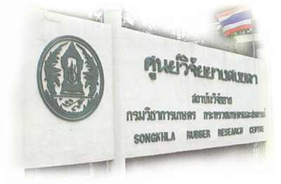

ประวัติศูนย์วิจัยยางสงขลา
2475 หลังการเปลี่ยนแปลงการปกครองประเทศไทยจากระบอบราชาธิปไตยมาเป็นระบอบประชาธิปไตยแบบปัจจุบัน เจ้าพระยาธรรมศักดิ์มนตรี รัฐมนตรีว่าการกระทรวงธรรมการ เห็นว่า “การส่งเสริมการเกษตรเท่าที่เป็นอยู่ยังล่าช้า สมควรรีบเร่งให้รวดเร็วขึ้น”
ปี 2476 : โรงเรียนฝึกหัดครูประถมกสิกรรมภาคใต้คอหงส์
ได้ตั้ง “โรงเรียนฝึกหัดครูประถมกสิกรรมภาคใต้คอหงส์” โดยมีหลวงสุวรรณวาจกกสิกิจเป็นผู้ดำเนินการ (จากเดิมโรงเรียนฝึกหัดครูประถมกสิกรรมมีอยู่แห่งเดียวในภาคอีสาน ณ โนนวัด) หลวงสุวรรณ ฯ ได้ซื้อสวนยางพาราจาก“หลวงศุภศัย สโมธาน” ตรงส 3 แยกบ้านคอหงส์ เนื้อที่ประมาณ 800 ไร่ ด้วยเงินงบประมาณของกระทรวงธรรมการ วันที่ 13 กันยายน 2476 ได้เปิดทำการเรียนการสอนเป็นครั้งแรก โดยมี
- อาจารย์หลวงสุวรรณฯ เป็นอาจารย์ใหญ่
- อาจารย์เริ่ม บูรณฤกษ์ เป็นอาจารย์ผู้ช่วย
- คณะอาจารย์และครูประจำวิชาอีก 7-8 ท่าน
ไม่นานนักพื้นที่ของโรงเรียน ฯ ประมาณ 1 ใน 3 ได้ถูกกระทรวงศึกษาธิการโอนให้โรงเรียนพลตำรวจภูธรสงขลา ซึ่งปัจจุบันคือ กองพันทหารราบที่ 5 ค่ายเสนาณรงค์.
วันที่ 19 มกราคม2497 : สถานีการยางคอหงส์
โดยพระราชกฤษฎีกาจัดระเบียบกรมกสิกรรม กองการยางได้เพิ่มแผนกขึ้นอีก 4 แผนก โดยมีสถานีการยางคอหงส์ สถานีการยางจันดี สถานีการยางเขาช่อง สถานีการยางในช่อง
ระหว่างปี 2497-2507 สถานีการยางคอหงส์ ได้ดำเนินการงานทดลองเกี่ยวกับการกรีดยาง การผลิตยางรูปแบบต่าง ๆ ด้านพืชกรรมก็ทดลองผสมพันธุ์และคัดเลือกพันธุ์ยาง
สถานีการยางคอหงส์ได้เริ่มต้นศึกษาค้นคว้าเรื่องยางพาราอย่างจริงจัง ได้ขอผู้เชี่ยวชาญ FAO คือ
- Mr.William Lloyd ผู้เชี่ยวชาญด้านสวนยาง
- Mr.Mellers ผู้เชี่ยวชาญด้านเทคโนโลยี
ท่านทั้งสองได้ช่วยงานในเบื้องต้นได้มากและได้สนับสนุนส่งเจ้าหน้าที่ไปศึกษาและดูงานยางด้านต่างๆในต่างประเทศหลายคน งานค้นคว้าเรื่องยางดำเนินมาเป็นระยะ ๆ จากนั้นมา
วันที่18 มกราคม2508 : ศูนย์วิจัยการยางคอหงส์
ได้สถาปนาเป็น "ศูนย์วิจัยการยางคอหงส์” มีวัตถุประสงค์ที่จะให้เป็นสำนักงานกลางของการปฏิบัติงานตามโครงการพัฒนายาง ที่ได้รับความช่วยเหลือด้านงบประมาณและการสนับสนุนจาก
- รัฐบาลไทย
- องค์การสหประชาชาติ (United Nations Special Fund)
- สำนักงานกองทุนพิเศษแห่งสหประชาชาติ (United Nations Development Program - UNDP)
- องค์การอาหารและเกษตร (Food and Agriculture Organization - FAO)
- สำนักงานกองทุนสงเคราะห์การทำสวนยาง (เงิน 5%)
- กรมวิชาการเกษตร กระทรวงเกษตรและสหกรณ์
ปี 2525 กองการยางได้เปลี่ยนมาเป็นสถาบันวิจัยยาง
ปี 2526 มีการแบ่งงานภายในกรมวิชาการเกษตร ให้ศูนย์วิจัยยางคอหงส์ เป็นหนึ่งในสามศูนย์ของสถาบันวิจัยยาง
ปี 2527 : ศูนย์วิจัยยางสงขลา
ปี พ.ศ. 2527 เปลี่ยนชื่อเป็น “ศูนย์วิจัยยางสงขลา” อยู่ในความรับผิดชอบของสถาบันวิจัยยาง กรมวิชาการเกษตร กระทรวงเกษตรและสหกรณ์
ปัจจุบัน ศูนย์วิจัยยางสงขลา เป็นหน่วยงานสังกัดสถาบันวิจัยยาง กรมวิชาการเกษตร กระทรวงเกษตรและสหกรณ์ รับผิดชอบแผนงานวิจัยและพัฒนายาง เช่น การปรับปรุงพันธุ์ยาง การกรีดยาง การอารักขาพืช การเสริมรายได้เจ้าของสวนยางขนาดเล็ก การจัดการดินปุ๋ยและน้ำ การเขตกรรม และการทดสอบและสำรวจด้านการผลิตยาง
| 2476 | โรงเรียนฝึกหัดครูประถมกสิกรรมภาคใต้ (โรงเรียนฝึกหัดครูมูล ท่าชะมวง ต.ควนเนียงอ.รัตตภูมิ จ.สงขลา) | กระทรวงธรรมการ |
| 13 กันยายน 2476 | โรงเรียนฝึกหัดครูประถมกสิกรรมภาคใต้ คอหงส์ | กระทรวงธรรมการ |
| โรงเรียนมัธยมวิสามัญเกษตรกรรม | โรงเรียนมัธยมวิสามัญเกษตรกรรม | |
| สถานีทดลองกสิกรรมภาคใต้ | กรมเกษตรและการประมง กรมกสิกรรม | |
| 19 มกราคม 2497 | ศูนย์วิจัยการยาง | กองการยางกรมวิชาการเกษตร |
| ศูนย์วิจัยยางคอหงส์ | กองการยาง กรมวิชาการเกษตร | |
| 2527 – ปัจจุบัน | ศูนย์วิจัยยางสงขลา | สถาบันวิจัยยาง กรมวิชาการเกษตรกระทรวงเกษตร ฯ |